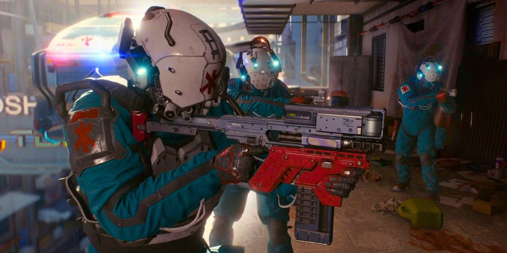

Боевой Номер: 10, OC: 11, ПЗ: 20, СКО: 4, ТЕЛ: 4
Использует свой Боевой Номер для навыков: первая помощь, парамедик, хирургия, медицинские технологии.
Вооружен: Тяжелый Пистолет
Экипирован: Легкий Бронежилет
Оборудование: Крионасос, Аэрогиппо(х2) с дозой быстрого детокса.
Trauma Team
Информация предоставлена корпорацией «Траума Тим Интернэшнл»
Уровни Обслуживания
Приложение Trauma-Team:
Получи помощь в "самостоятельных" операциях на самом себе.
Вызвать бригаду Trauma Team, чтобы они прилетели и спасли вашу задницу, может быть заманчиво, но это стоит денег, и не каждый может позволить себе страховку.
Так зачем тратить с трудом заработанные деньги, если можно просто скачать Trauma Team МедСкан,
чтобы подлатать себя удаленно?
Просто сфотографируйте вашу травму, и вас свяжут со специалистом Trauma Team, который проведет вас через простые медицинские процедуры и обеспечит высококачественный уход на дому.
Trauma Team не несет ответственности за халатность, которую вы можете допустить при использовании приложения.
Пользовательское Соглашение и Условия
Обе страховки могут быть переданы по принципу 1-1, то есть вы можете использовать свою страховку для помощи одному из друзей без страховки,
но не для двух друзей одновременно, или если вы уже вызвали помощь себе.
Регистрация Trauma-карты на агент с подключенным биомонитором позволит агенту вызывать Trauma Team от вашего имени во время перестрелки без необходимости совершать действие,
коrда у вас ПЗ меньше, чем ТЕЛ, или коrда вы получаете критическое ранение, отделяющее часть тела.
Если вы зарегистрируете свою Trauma-карту на агент друга, его агент сможет вызвать Trauma Team,
как описано выше, но по вашей страховке.
В противном случае вызов Trauma Team - это действие, и его можно сделать в любой момент, когда вы травмировались.
Если звать их по пустякам, они разозлятся и случайно забудут ответить на ваш следующий вызов.
Вызвав Trauma Team, вы бросаете d6. Результат равен количеству раундов до прибытия Trauma Team.
Затем они присоединяются в начало очереди инициативы.
Trauma Team рассматривается как подкрепление у законника, то есть, помимо ОС,ПЗ, показателей СКО и ТЕЛ
у них есть боевой номер, который используется как для нападения, так и для защиты. Это число объединяет для них СТАТ и Навык.
Вы прибавляете к этому значению бросок d10, когда атакуете их оружием/ снаряжением или защищаетесь.
Члены Trauma Team не моrут уклоняться от пуль.
Trauma Team состоит из 5 человек: врач, ассистент, пилот и 2 сотрудника службы безопасности Trauma Team. Они прибывают с воздуха на AV-4, оснащенном креплением для тяжелого оружия с установленным Tsunami Arms Helix (см.стр.347). AV-4 также оснащен мед.техникой, включая 4 криокамеры и самым современным операционным столом.
Trauma Team гордится использованием AV-4 для прибытия как можно ближе к месту действия и помещает всех пациентов в мешки для Крионасоса в тот же самый момент, когда они прибывают в бой, если это возможно, после чего они уезжают под прикрытием огня, как только все пациенты будут закреплены в AV-4.
